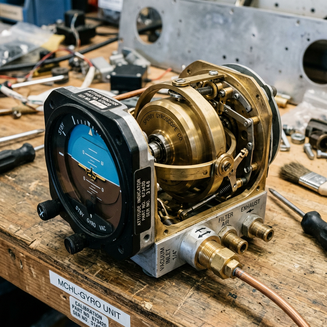

Gyro instruments basics
Module Objectives
- Define the physical principle of gyroscopic rigidity in space.
- Distinguish the power sources feeding the Attitude Indicator versus the Turn Coordinator.
- Explain the utter physical independence of the magnetic compass.
Why Does This Matter?

Mid-flight in heavy clouds, the primary engine-driven vacuum pump catastrophically shears its drive shaft. Without suction, the heavy brass gyroscopes inside the Attitude Indicator (AI) and Directional Gyro (DG) slowly spin down. The AI Horizon slowly rolls 30 degrees sideways, and the DG begins wandering uncontrollably. If the pilot strictly trusts these dying instruments, they will roll the plane upside down into an unrecoverable dive. However, because avionics engineers designed a structurally diverse power architecture, the electric Turn Coordinator and the fluid-filled magnetic compass remain flawlessly functional. Knowing exactly which instrument is powered by which source allows complete triage during a cascading failure.
What You Need To Know
The Core Principle: Rigidity in Space
At the conceptual heart of legacy mechanical flight instruments lies a heavy, perfectly balanced brass rotor spinning at massive speeds (upwards of 20,000 RPM).
- A spinning mass vehemently resists any external force trying to change its planar orientation. This is known as rigidity in space.
- The spinning gyro rotor stays perfectly locked level with the physical horizon. As the aircraft banks and pitches in the sky, it physically moves and rotates *around* the gyro casing.
- The instrument face merely displays the mechanical difference between the rigid horizontal gyro and the tilting aircraft case.
Architecture 1: Vacuum-Driven Gyros
Historically, the two most critical instruments are powered purely by massive pneumatic suction from an engine-driven vacuum pump:
- 1. Attitude Indicator (AI): The artificial horizon; provides instant, direct readout of both pitch and roll.
- 2. Directional Gyro (DG): Provides stable heading reference that does not bounce around like a magnetic compass.
How it works: The pump sucks air out of the instrument casing. Filtered cabin air rushes in through a tiny internal jet nozzle, physically blasting against scalloped "buckets" machined into the heavy gyro rotor, keeping it spinning at a blinding 18,000 RPM.
Architecture 2: Electrically Driven Gyros
To guarantee flight safety, the FAA mandates that instrument panels cannot rely entirely on a single power source (like a sheared vacuum pump).
- Therefore, the secondary backup instrument, the Turn Coordinator (or Turn-and-Bank), is almost exclusively driven by a 28V DC electric motor.
- If the entire vacuum system explodes, the electrically-spun Turn Coordinator continues calculating the aircraft's roll and yaw turning rates, allowing a skilled pilot to navigate blindly down on backup instruments.
The Independent Anomaly: The Magnetic Compass
The magnetic compass sitting on top of the dashboard is the ultimate fail-safe. It is the only primary flight instrument that contains zero gyroscopes, requires zero vacuum suction, and requires absolutely zero electrical power. It is a magnetized card floating in a damping fluid (kerosene), physically dragged into alignment by the massive invisible flux lines of Earth's magnetic core. It will function flawlessly even if the airplane is entirely dead.
System Visualization
graph TD
A[Vacuum Pump Failure - Sheared Shaft] --> B[Zero Pneumatic Suction in Panel]
B --> C[Attitude Indicator Gyro spins down]
B --> D[Directional Gyro spins down]
C --> E[Artificial Horizon tumbles and reads false data]
D --> E
A -.->|Electrical Bus remains powered at 28V| F[Turn Coordinator Gyro spins continuously]
A -.->|Earth Magnetic Field uninterrupted| G[Compass continues floating flawlessly]
F --> H[Crucial backup references remain active to save aircraft]
G --> H
style E fill:#991b1b,stroke:#7f1d1d,stroke-width:2px,color:#fff
style H fill:#166534,stroke:#14532d,stroke-width:2px,color:#fff
On The Job
When tracking down erratic mechanical gyros, immediately check the panel vacuum gauge. The gyro buckets require a precise suction flow (typically 4.8 to 5.2 inHg) to achieve 20,000 RPM. A restricted, heavily soiled central air filter will drop the system to 3.0 inHg, resulting in gyros that sluggishly lag behind the aircraft's movements or constantly precess and wander off course. You must routinely clean gyro filters and vigorously slap mechanical DG instruments on the bench to test bearing friction before they are certified for instrument flight.
Reference Terms
Vacuum-Driven Gyro Operation
In a vacuum-driven attitude indicator, suction created by an engine-driven vacuum pump draws filtered air through a nozzle; the air jet impinges on buckets around the gyro rotor rim, spinning it at high RPM.
Turn Coordinator vs Turn-and-Bank
The turn coordinator's gyro is canted at approximately 30° to sense both roll rate and yaw rate; the turn-and-bank indicator's gyro is vertical (upright), sensing yaw rate only.
Magnetic Compass
The only primary flight instrument not gyroscopically driven; it uses Earth's magnetic field to align a magnetic sensing element and provide directional reference.
Vacuum-Powered Flight Instruments
The attitude indicator (AI) and directional gyro (DG/heading indicator) are the two primary flight instruments that rely on the aircraft vacuum system to spin their gyro rotors.
Gyroscopic Rigidity in Space
The property of a spinning gyro rotor to resist any force that tries to change its plane of rotation; once spinning, the rotor axis remains pointed in a fixed direction in space, providing a stable attitude reference.
Rigidity in Space
The fundamental physics principle where a high-mass spinning rotor aggressively resists any force attempting to tilt its axis of rotation.
Vacuum Pump
A mechanical, engine-driven pneumatic pump creating immense suction deliberately used to physically spin the Attitude Indicator and Directional Gyros.
Turn Coordinator
An electrically powered backup gyro instrument structurally canted at 30 degrees to effectively sense combinations of both roll rate and yaw rate.
Precession
The inherent mechanical error where bearing friction and Earth rotation slowly cause a spinning gyroscope to drift away from its calibrated heading.
Assessment Check
The primary Attitude and Heading indicators rely on massive engine-driven vacuum pumps spinning brass rotors; the Turn Coordinator leverages electrical motors for backup redundancy, and the compass requires zero power whatsoever. --- ---